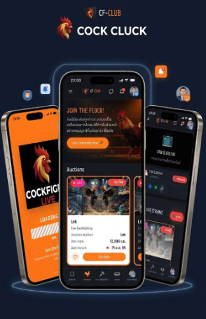
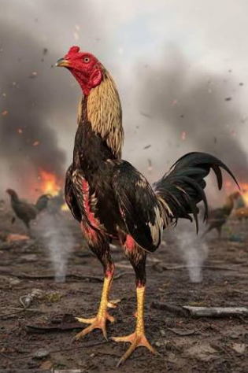
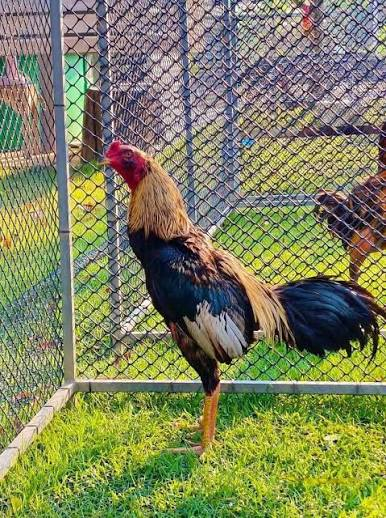

The first vertical platform dedicated to the professional cockfighting universe — connecting fans, breeders, and sponsors in one place.
A space for enthusiasts to connect, discuss, and negotiate specimens.
Live broadcasts of all tournaments with professional production.
Overcomes geographic limitations and brings the sport to new audiences.
Thai cockfighting is a traditional sport and cultural heritage that has been deeply rooted in Thai society for over a thousand years. It originated when ancient people domesticated wild junglefowls for food and noticed their natural fighting instincts, leading to selective breeding for entertainment and sport. This combat sport is so deeply embedded in Thai history and literature that it features in a legendary historical event during the Ayutthaya period. King Naresuan the Great famously used his "Yellow White-Tailed" rooster to defeat the Burmese Crown Prince's fighting cock, proving that cockfighting in Thailand is viewed not just as gambling, but as an honorable martial art of animals.
Today, Thai cockfighting has evolved from a rural pastime into a high-value sports industry and agricultural business. Premium breeds like the Burmese, Pakoiy, and purebred Thai gamefowls are continually developed for enhanced tactical skills and endurance. This transformation has turned cockfighting into a highly popular traditional sports content on online platforms and streaming services, successfully preserving this cultural legacy and connecting it with a new generation of global audiences.




The story of "Chao Tham Thong," a grassroots farmer's fighting rooster bought cheaply by a wealthy investor, won 33 million baht in major arenas and was resold for breeding at 22 million baht, highlights systemic inequality. Due to a lack of capital to access standard arenas, the farmer missed out on becoming a millionaire. However, a fair, risk-free competition platform with proper animal welfare would empower all farmers to unlock the true value of their roosters, ensuring equal opportunities and preventing exploitation.